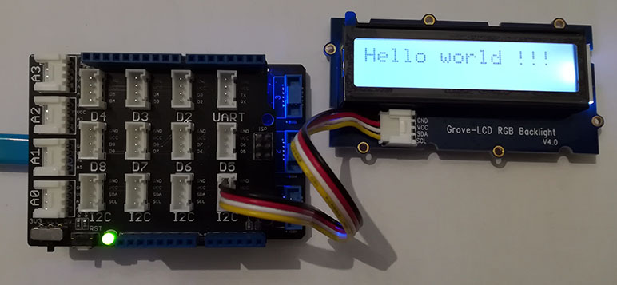

Version: 0.9.0
Grove LcdRgbBacklight is connected as followed on Netduino 3:

| Grove LcdRgbBacklight | Mainboard |
|---|---|
| I2C Socket | I2C Socket |
using System.Threading;
using Bauland.Grove;
using Bauland.Pins;
namespace TestLcdRgbBacklight
{
static class Program
{
static void Main()
{
// LcdRgbBacklight module is connected on a I2C connector of base shield module in top of Netduino3
LcdRgbBacklight lcd=new LcdRgbBacklight(Netduino3.I2cBus.I2c);
lcd.SetBacklightRgb(64,64,64);
lcd.EnableDisplay(true);
lcd.Write("Hello world !!!");
while (true)
{
Thread.Sleep(20);
}
}
}
}